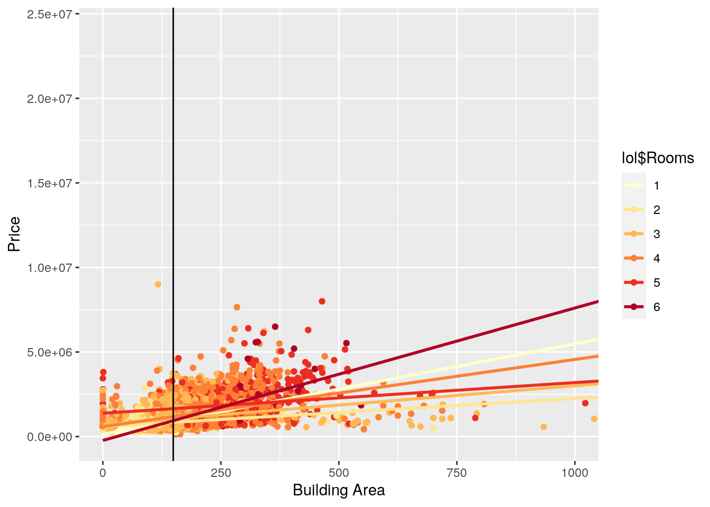
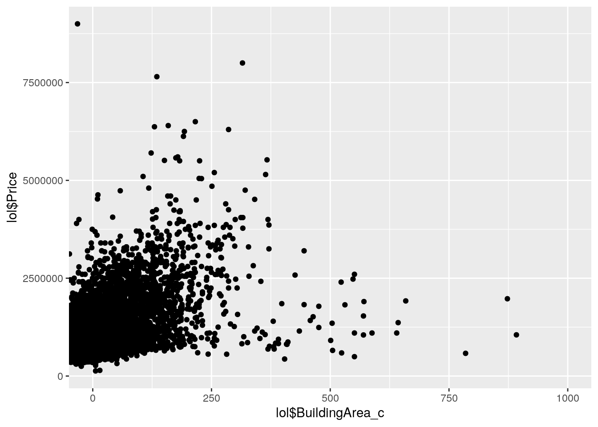
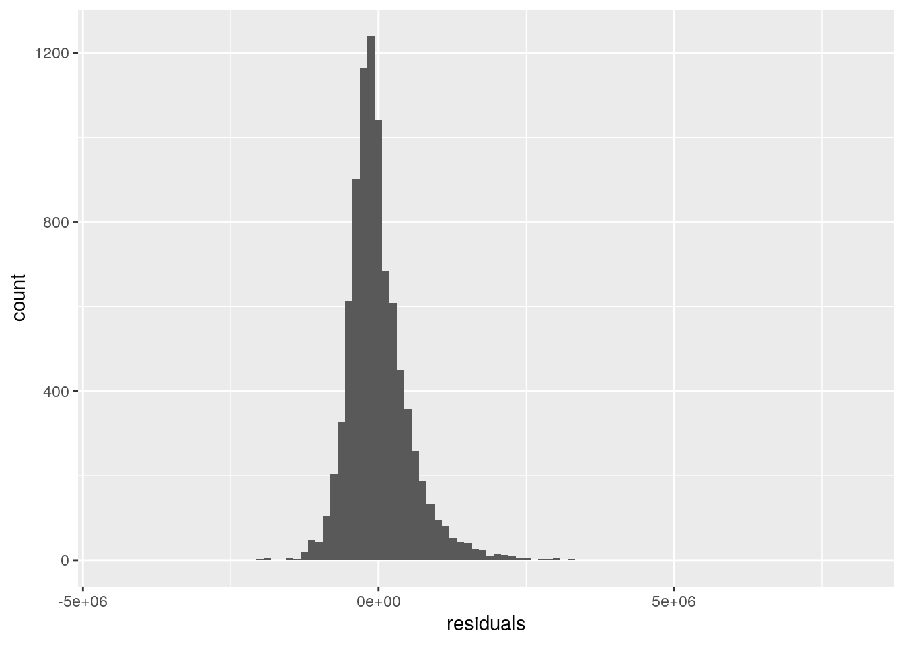
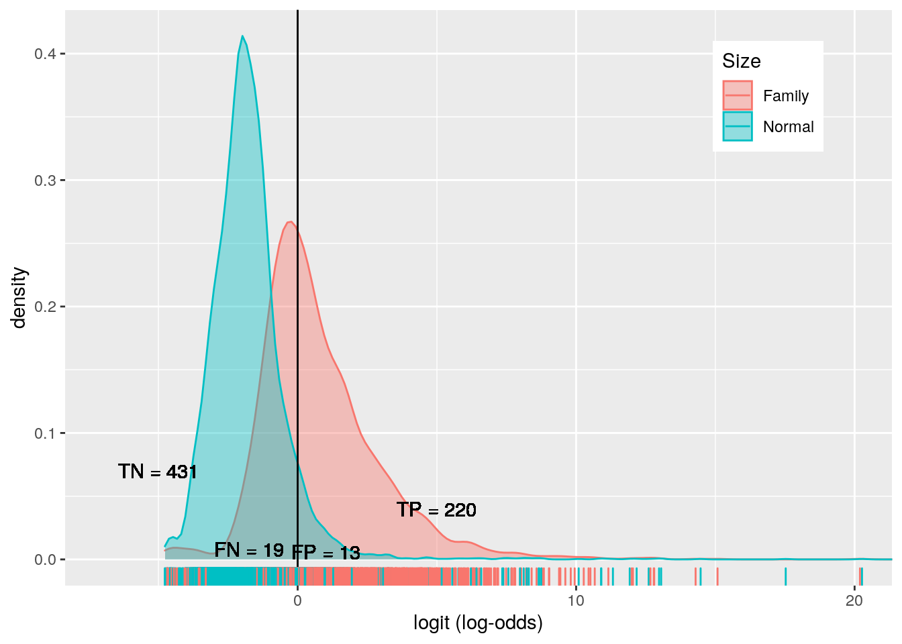
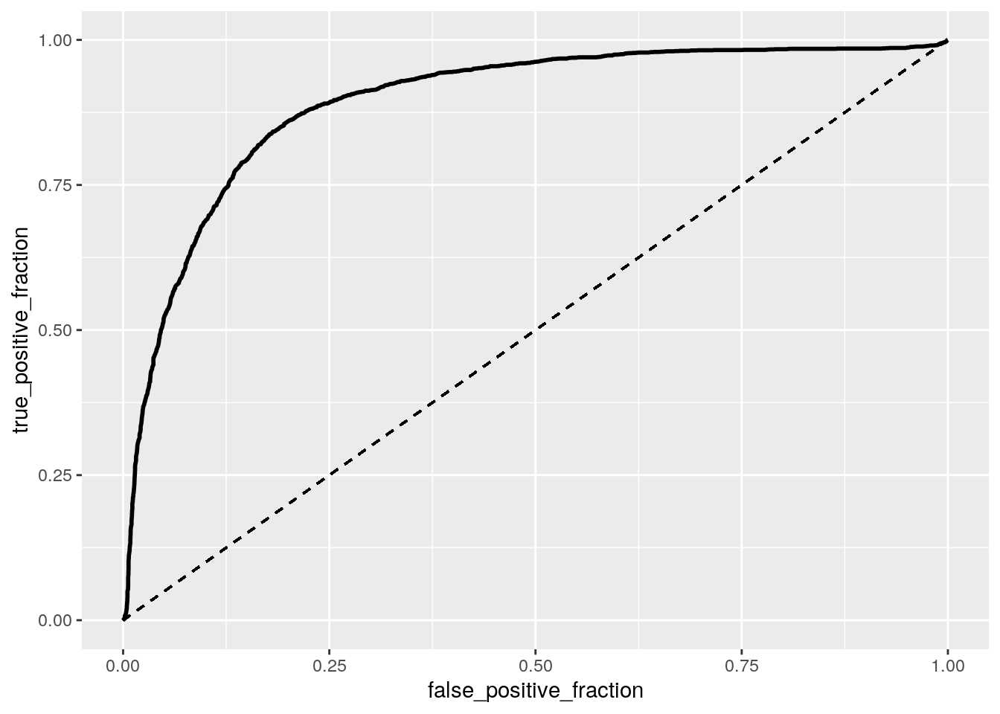

Brandon Deeb (btd543)
And away we go! Loading stuff up. This is data was obtained from Kraggle and is essentially a breakdown of the Melbourne housing market, which has ‘cooled down’ recently. I had a few other ideas in mind before this one, such as pitching in professional baseball, but it turns out sometimes there can actually be too much data: something I had never considered. But, this dataset is really nice! There are 8887 houses measured in this dataset, which is absolutely monstrous to conceptualize. Some of the main variables of interest include number of rooms, ‘type’ of home (i.e. house, duplex, townhouse), price, number of bathrooms, amount of land included with property, year built, and a bunch of other really useful things. I removed some of the other undesirables, like seller information or date listed. All of the variables retained measure pretty much exactly what they sound like, and are really interesting to think about in regards to being a homeowner. As someone from South Texas, land size always seemed pretty generous; everywhere you look people have insanely big yards or open fields behind their house, so it’s interesting to see what’s of value for people looking to buy homes in Melbourne (a lot less garage space than South Texas).
library(tidyverse)
library(dplyr)
library(rstatix)
library(ggpubr)
library(sandwich)
library(lmtest)
library(RColorBrewer)
library(plotROC)
library(pROC)
getwd()## [1] "/stor/home/btd543/Website/content/project"lol <- read.csv("Melbourne_housing_FULL.csv")
lol <- lol %>% na.omit()
lol %>% glimpse()## Rows: 8,887
## Columns: 21
## $ Suburb <fct> Abbotsford, Abbotsford, Abbotsford, Abbotsford, Abbotsf…
## $ Address <fct> 25 Bloomburg St, 5 Charles St, 55a Park St, 124 Yarra S…
## $ Rooms <int> 2, 3, 4, 3, 2, 2, 3, 2, 2, 3, 3, 2, 4, 2, 2, 2, 3, 2, 3…
## $ Type <fct> h, h, h, h, h, h, h, u, h, h, h, h, h, u, h, h, h, h, h…
## $ Price <int> 1035000, 1465000, 1600000, 1876000, 1636000, 1097000, 1…
## $ Method <fct> S, SP, VB, S, S, S, VB, S, S, S, S, S, PI, S, PI, S, PI…
## $ SellerG <fct> Biggin, Biggin, Nelson, Nelson, Nelson, Biggin, Nelson,…
## $ Date <fct> 4/02/2016, 4/03/2017, 4/06/2016, 7/05/2016, 8/10/2016, …
## $ Distance <fct> 2.5, 2.5, 2.5, 2.5, 2.5, 2.5, 2.5, 2.5, 2.5, 2.5, 2.5, …
## $ Postcode <fct> 3067, 3067, 3067, 3067, 3067, 3067, 3067, 3067, 3067, 3…
## $ Bedroom2 <int> 2, 3, 3, 4, 2, 3, 3, 2, 2, 3, 2, 2, 4, 2, 2, 2, 3, 2, 3…
## $ Bathroom <int> 1, 2, 1, 2, 1, 1, 2, 2, 1, 2, 1, 1, 2, 1, 2, 1, 3, 2, 1…
## $ Car <int> 0, 0, 2, 0, 2, 2, 2, 1, 2, 1, 1, 1, 2, 1, 1, 0, 1, 2, 1…
## $ Landsize <int> 156, 134, 120, 245, 256, 220, 214, 0, 238, 113, 138, 15…
## $ BuildingArea <dbl> 79, 150, 142, 210, 107, 75, 190, 94, 97, 110, 105, 73, …
## $ YearBuilt <int> 1900, 1900, 2014, 1910, 1890, 1900, 2005, 2009, 1890, 1…
## $ CouncilArea <fct> Yarra City Council, Yarra City Council, Yarra City Coun…
## $ Lattitude <dbl> -37.8079, -37.8093, -37.8072, -37.8024, -37.8060, -37.8…
## $ Longtitude <dbl> 144.9934, 144.9944, 144.9941, 144.9993, 144.9954, 144.9…
## $ Regionname <fct> Northern Metropolitan, Northern Metropolitan, Northern …
## $ Propertycount <fct> 4019, 4019, 4019, 4019, 4019, 4019, 4019, 4019, 4019, 4…lol %>% dim()## [1] 8887 21lol <- lol %>% select(1, 3, 4, 5, 12, 13, 14, 15, 16, 17, 20)
lol %>% glimpse()## Rows: 8,887
## Columns: 11
## $ Suburb <fct> Abbotsford, Abbotsford, Abbotsford, Abbotsford, Abbotsfo…
## $ Rooms <int> 2, 3, 4, 3, 2, 2, 3, 2, 2, 3, 3, 2, 4, 2, 2, 2, 3, 2, 3,…
## $ Type <fct> h, h, h, h, h, h, h, u, h, h, h, h, h, u, h, h, h, h, h,…
## $ Price <int> 1035000, 1465000, 1600000, 1876000, 1636000, 1097000, 13…
## $ Bathroom <int> 1, 2, 1, 2, 1, 1, 2, 2, 1, 2, 1, 1, 2, 1, 2, 1, 3, 2, 1,…
## $ Car <int> 0, 0, 2, 0, 2, 2, 2, 1, 2, 1, 1, 1, 2, 1, 1, 0, 1, 2, 1,…
## $ Landsize <int> 156, 134, 120, 245, 256, 220, 214, 0, 238, 113, 138, 150…
## $ BuildingArea <dbl> 79, 150, 142, 210, 107, 75, 190, 94, 97, 110, 105, 73, 1…
## $ YearBuilt <int> 1900, 1900, 2014, 1910, 1890, 1900, 2005, 2009, 1890, 18…
## $ CouncilArea <fct> Yarra City Council, Yarra City Council, Yarra City Counc…
## $ Regionname <fct> Northern Metropolitan, Northern Metropolitan, Northern M…Now, we run a MANOVA test to compare the number of rooms to the other important numeric variables, such as Price, Landsize, and BuildingArea. I had to set the ‘Rooms’ variable to a categorical instead of a numeric value, and followed it up by double-checking the degrees of freedom (because the possibility of ten rooms…whattt??).
lol$Rooms <- as.character(as.numeric(lol$Rooms))
lol %>% glimpse()## Rows: 8,887
## Columns: 11
## $ Suburb <fct> Abbotsford, Abbotsford, Abbotsford, Abbotsford, Abbotsfo…
## $ Rooms <chr> "2", "3", "4", "3", "2", "2", "3", "2", "2", "3", "3", "…
## $ Type <fct> h, h, h, h, h, h, h, u, h, h, h, h, h, u, h, h, h, h, h,…
## $ Price <int> 1035000, 1465000, 1600000, 1876000, 1636000, 1097000, 13…
## $ Bathroom <int> 1, 2, 1, 2, 1, 1, 2, 2, 1, 2, 1, 1, 2, 1, 2, 1, 3, 2, 1,…
## $ Car <int> 0, 0, 2, 0, 2, 2, 2, 1, 2, 1, 1, 1, 2, 1, 1, 0, 1, 2, 1,…
## $ Landsize <int> 156, 134, 120, 245, 256, 220, 214, 0, 238, 113, 138, 150…
## $ BuildingArea <dbl> 79, 150, 142, 210, 107, 75, 190, 94, 97, 110, 105, 73, 1…
## $ YearBuilt <int> 1900, 1900, 2014, 1910, 1890, 1900, 2005, 2009, 1890, 18…
## $ CouncilArea <fct> Yarra City Council, Yarra City Council, Yarra City Counc…
## $ Regionname <fct> Northern Metropolitan, Northern Metropolitan, Northern M…manova <- manova(cbind(Price, Landsize, BuildingArea) ~ Rooms,
data = lol)
summary(manova)## Df Pillai approx F num Df den Df Pr(>F)
## Rooms 9 0.42514 162.86 27 26631 < 2.2e-16 ***
## Residuals 8877
## ---
## Signif. codes: 0 '***' 0.001 '**' 0.01 '*' 0.05 '.' 0.1 ' ' 1roomy <- unique(lol$Rooms)
roomy %>% glimpse## chr [1:10] "2" "3" "4" "1" "6" "5" "8" "7" "10" "12"As expected, p-value is way below the cutoff, so there’re interactions of some sort at play here. Running univariate ANOVA tests to see where. Again, unsurprisingly, there is some sort of interaction between the number of rooms a house has and its price, landsize, and building area. Not too unexpected here; the more rooms a house has, the more area it takes up. This kinda goes interchangeably with landsize, except landsize includes areas surrounding the house as well. This increase in building area more materials, so higher price.
summary.aov(manova)## Response Price :
## Df Sum Sq Mean Sq F value Pr(>F)
## Rooms 9 9.6341e+14 1.0705e+14 302.82 < 2.2e-16 ***
## Residuals 8877 3.1380e+15 3.5350e+11
## ---
## Signif. codes: 0 '***' 0.001 '**' 0.01 '*' 0.05 '.' 0.1 ' ' 1
##
## Response Landsize :
## Df Sum Sq Mean Sq F value Pr(>F)
## Rooms 9 116121501 12902389 11.577 < 2.2e-16 ***
## Residuals 8877 9893149905 1114470
## ---
## Signif. codes: 0 '***' 0.001 '**' 0.01 '*' 0.05 '.' 0.1 ' ' 1
##
## Response BuildingArea :
## Df Sum Sq Mean Sq F value Pr(>F)
## Rooms 9 26122329 2902481 605.18 < 2.2e-16 ***
## Residuals 8877 42574517 4796
## ---
## Signif. codes: 0 '***' 0.001 '**' 0.01 '*' 0.05 '.' 0.1 ' ' 1Using a paired t-test to determine which groups differ. This yielded some pretty weird results where the entire t-test was empty due to there only being one entry for the 10 and 12 room houses, so I removed them. They were really gross outliers though, so it makes sense to remove them. After running all t-tests, I found that there weren’t really enough observations in the 7 and 8 room houses either and they were really messing with the data. It suggested there wasn’t really significant differences between a 1 room and an 8 room house, which was just blatantly wrong, so they were omitted. All of the t-tests have a similar trend: almost all of the numerical variables varied significantly by each number of rooms, with the interaction getting slightly lower between houses with 5 and 6 rooms. Logically, this all follows. Houses that big are changing by such small amounts that it’s probably not that significant percentage wise (i.e. price goes up some thousands, but the total is in the millions, or area goes up another 100 square meters in a 2000+ sized house). This led to a really wild 49 total tests, and a corrected type I error of 0.05/49 or 0.00102. This means that there is no significant difference between price of 5 and 6 room houses, no significant difference between landsizes of 4, 5, and 6 room houses, and no significant difference between building area of 5 and 6 room houses. All other interaction are significant! In regards to assumptions, this MANOVA likely breaks the multivariate normality assumption, homogeneity of covariance, assuming linearity among DVs (stuff in expensive homes typically isn’t the same price/level of luxury as it is in small homes; a kitchen in a 2 room house is not the same as a kitchen in a 5 room house), no extreme outliers (some of these prices are outrageous), and maybe no collinearity. Overall, MANOVA with further analysis was good for a starting perception of things, but violates a lot of assumptions for us to take this at face value without further analysis.
lol$Price <- as.numeric(as.integer(lol$Price))
lol <- lol[lol$Rooms != "12", ]
lol <- lol[lol$Rooms != "10", ]
lol <- lol[lol$Rooms != "8", ]
lol <- lol[lol$Rooms != "7", ]
table(lol$Rooms)##
## 1 2 3 4 5 6
## 340 1912 3824 2240 507 51pairwise.t.test(lol$Price, lol$Rooms, p.adj = "none")##
## Pairwise comparisons using t tests with pooled SD
##
## data: lol$Price and lol$Rooms
##
## 1 2 3 4 5
## 2 <2e-16 - - - -
## 3 <2e-16 <2e-16 - - -
## 4 <2e-16 <2e-16 <2e-16 - -
## 5 <2e-16 <2e-16 <2e-16 <2e-16 -
## 6 <2e-16 <2e-16 <2e-16 <2e-16 0.0047
##
## P value adjustment method: nonepairwise.t.test(lol$Landsize, lol$Rooms, p.adj = "none")##
## Pairwise comparisons using t tests with pooled SD
##
## data: lol$Landsize and lol$Rooms
##
## 1 2 3 4 5
## 2 0.42324 - - - -
## 3 0.05278 0.02573 - - -
## 4 7.4e-06 7.0e-12 1.3e-08 - -
## 5 6.1e-07 1.4e-09 3.7e-07 0.07018 -
## 6 1.9e-05 2.8e-05 0.00016 0.00708 0.04659
##
## P value adjustment method: nonepairwise.t.test(lol$BuildingArea, lol$Rooms, p.adj = "none")##
## Pairwise comparisons using t tests with pooled SD
##
## data: lol$BuildingArea and lol$Rooms
##
## 1 2 3 4 5
## 2 <2e-16 - - - -
## 3 <2e-16 <2e-16 - - -
## 4 <2e-16 <2e-16 <2e-16 - -
## 5 <2e-16 <2e-16 <2e-16 <2e-16 -
## 6 <2e-16 <2e-16 <2e-16 <2e-16 0.018
##
## P value adjustment method: noneThis linear regression model is aimed at seeing how price is affected by building area and number of rooms. First, I centered all the desired numerical values. The resulting regression model uses 1 room houses as the reference, showing a price of 932,128 Australian dollars of average building area. Things start to get a little weird here, though, with price actually decreasing for a 2 room house, and barely increasing for a 6 room house. The interaction between area and room number might help compensate for this, though. While the other room values increase greatly, their building area interaction decreases, meaning while the price might still go up, it’s a sort of “balance” between the two. The only positive building area interaction is with homes with 6 rooms, with a drastic slope. This follows the aforementioned, as 6 room homes lose a bit of price in the rooms interaction, but gain a lot in the building area interaction. It can also be noted that these are centered values, so it is also likely that these lower values come in below the average, and are therefore negative! This means their contribution to the Price ends up being a positive one. The regression was plotted in order to visualize relationships. For houses of all room sizes, the slope is positive, showing the relationship between increased building area and an increased cost.
mean(lol$Price)## [1] 1092050lol$Price_c <- (lol$Price - mean(lol$Price))
mean(lol$BuildingArea)## [1] 149.0656lol$BuildingArea_c <- (lol$BuildingArea - mean(lol$BuildingArea))
fit <- lm(Price ~ BuildingArea_c * Rooms, data = lol)
fit %>% summary()##
## Call:
## lm(formula = Price ~ BuildingArea_c * Rooms, data = lol)
##
## Residuals:
## Min 1Q Median 3Q Max
## -4411185 -321932 -88478 230018 8013002
##
## Coefficients:
## Estimate Std. Error t value Pr(>|t|)
## (Intercept) 932128 129114 7.219 5.65e-13 ***
## BuildingArea_c 5349 1307 4.092 4.31e-05 ***
## Rooms2 -87696 130700 -0.671 0.50226
## Rooms3 128217 129446 0.991 0.32195
## Rooms4 246839 129938 1.900 0.05751 .
## Rooms5 717856 132958 5.399 6.87e-08 ***
## Rooms6 8688 198741 0.044 0.96513
## BuildingArea_c:Rooms2 -3697 1334 -2.771 0.00559 **
## BuildingArea_c:Rooms3 -3061 1317 -2.325 0.02010 *
## BuildingArea_c:Rooms4 -1376 1317 -1.045 0.29609
## BuildingArea_c:Rooms5 -3537 1316 -2.687 0.00721 **
## BuildingArea_c:Rooms6 2480 1559 1.590 0.11176
## ---
## Signif. codes: 0 '***' 0.001 '**' 0.01 '*' 0.05 '.' 0.1 ' ' 1
##
## Residual standard error: 561800 on 8862 degrees of freedom
## Multiple R-squared: 0.3161, Adjusted R-squared: 0.3153
## F-statistic: 372.4 on 11 and 8862 DF, p-value: < 2.2e-16nb.cols <- 6
mycolors <- colorRampPalette(brewer.pal(8, "YlOrRd"))(nb.cols)
ggplot(lol, aes(lol$BuildingArea, lol$Price, color = lol$Rooms)) +
geom_point() + geom_smooth(method = "lm", se = F, fullrange = T) +
geom_vline(xintercept = mean(lol$BuildingArea)) + coord_cartesian(xlim = c(0,
1000)) + xlab("Building Area") + ylab("Price") + scale_color_manual(values = mycolors)
The amount of variance in Price we can explain with this model is only an adjusted 0.315. In testing the assumptions, a quick glance of the plots reveals some slight homoskedasticity, with points fanning out as x-axis increases. These observations are presumably independent and random and residuals look fairly normal in distribution. Using a Breusch-Pagan test to formally assess homoskedsticity, p-value returned is very small, so we can reject the null hypothesis of meeting homoskedasticity. After adjusting for lack of homoskedasticity with robust standard errors, we can get a better representation of our data, with larger standard errors for each variable/interaction. This is effectively a way to compensate for the dataset breaking assumptions and not being ideal. Some of these hits are pretty significant, with 6 Rooms taking a 100,000 increase and 5 Rooms taking a 180,000 increase!! We take a pretty hefty penalty for breaking the assumptions here.
summary(fit)##
## Call:
## lm(formula = Price ~ BuildingArea_c * Rooms, data = lol)
##
## Residuals:
## Min 1Q Median 3Q Max
## -4411185 -321932 -88478 230018 8013002
##
## Coefficients:
## Estimate Std. Error t value Pr(>|t|)
## (Intercept) 932128 129114 7.219 5.65e-13 ***
## BuildingArea_c 5349 1307 4.092 4.31e-05 ***
## Rooms2 -87696 130700 -0.671 0.50226
## Rooms3 128217 129446 0.991 0.32195
## Rooms4 246839 129938 1.900 0.05751 .
## Rooms5 717856 132958 5.399 6.87e-08 ***
## Rooms6 8688 198741 0.044 0.96513
## BuildingArea_c:Rooms2 -3697 1334 -2.771 0.00559 **
## BuildingArea_c:Rooms3 -3061 1317 -2.325 0.02010 *
## BuildingArea_c:Rooms4 -1376 1317 -1.045 0.29609
## BuildingArea_c:Rooms5 -3537 1316 -2.687 0.00721 **
## BuildingArea_c:Rooms6 2480 1559 1.590 0.11176
## ---
## Signif. codes: 0 '***' 0.001 '**' 0.01 '*' 0.05 '.' 0.1 ' ' 1
##
## Residual standard error: 561800 on 8862 degrees of freedom
## Multiple R-squared: 0.3161, Adjusted R-squared: 0.3153
## F-statistic: 372.4 on 11 and 8862 DF, p-value: < 2.2e-16fit %>% ggplot(aes(x = lol$BuildingArea_c, y = lol$Price)) +
geom_point(aes(x = lol$BuildingArea_c, y = lol$Price)) +
coord_cartesian(xlim = c(0, 1000))
residuals <- lm(Price ~ BuildingArea_c * Rooms, data = lol)$residuals
ggplot() + geom_histogram(aes(residuals), bins = 100)
bptest(fit)##
## studentized Breusch-Pagan test
##
## data: fit
## BP = 855.73, df = 11, p-value < 2.2e-16summary(fit)$coef[, 1:2]## Estimate Std. Error
## (Intercept) 932127.737 129113.938
## BuildingArea_c 5348.820 1307.021
## Rooms2 -87695.584 130699.932
## Rooms3 128217.195 129445.776
## Rooms4 246838.716 129938.187
## Rooms5 717855.734 132958.328
## Rooms6 8687.642 198741.009
## BuildingArea_c:Rooms2 -3696.831 1333.931
## BuildingArea_c:Rooms3 -3061.417 1316.848
## BuildingArea_c:Rooms4 -1376.514 1317.347
## BuildingArea_c:Rooms5 -3536.697 1316.023
## BuildingArea_c:Rooms6 2480.272 1559.438coeftest(fit, vcov = vcovHC(fit))[, 1:2]## Estimate Std. Error
## (Intercept) 932127.737 131232.411
## BuildingArea_c 5348.820 1305.923
## Rooms2 -87695.584 163010.534
## Rooms3 128217.195 131604.168
## Rooms4 246838.716 132487.367
## Rooms5 717855.734 311812.284
## Rooms6 8687.642 295806.574
## BuildingArea_c:Rooms2 -3696.831 2058.143
## BuildingArea_c:Rooms3 -3061.417 1350.327
## BuildingArea_c:Rooms4 -1376.514 1348.999
## BuildingArea_c:Rooms5 -3536.697 2705.424
## BuildingArea_c:Rooms6 2480.272 2523.739After computing for bootstrapped standard errors, there seems to be less standard error compared to both the regular and robust standard errors in the previous tests. All values decrease by anywhere from 100 (Building Area) to 105,000 (5 Rooms! Super impressive). This means that with bootstrapping and randomization, there is a tighter spread of these interactions, and are seemingly more reflective of observed data (assuming this data is ideal).
bootstrap_bill <- sample_frac(lol, replace = T)
samp_distn <- replicate(5000, {
bootstrap_bill <- sample_frac(lol, replace = T)
fitted <- lm(Price ~ BuildingArea_c * Rooms, data = bootstrap_bill)
coef(fitted)
})
samp_distn %>% t %>% as.data.frame %>% summarize_all(sd)## (Intercept) BuildingArea_c Rooms2 Rooms3 Rooms4 Rooms5 Rooms6
## 1 125174 1242.276 142157.3 125663.8 126623.4 212796.5 274266.1
## BuildingArea_c:Rooms2 BuildingArea_c:Rooms3 BuildingArea_c:Rooms4
## 1 1651.409 1288.023 1289.254
## BuildingArea_c:Rooms5 BuildingArea_c:Rooms6
## 1 1888.649 2306.854First, I establish a binary variable from the categorical I’ve been using for experimentation this far, Rooms. I split it right down the middle, with 1-3 Rooms being the ‘Normal’ category and 4-6 being the ‘Family’ category. A logistical regression is then run to observe how the new Size variable is affected by a house’s Price and BuildingArea. Because this is a logodds operation, all estimates need to be exponentiated before they can be used to determine the odds of a home being Normal. For example, a home with a price 100,000 dollars above the average with a building area 90 square meters above the average has a log odds of -0.938 + 0.041 + 2.141 = 1.244. Exponentiating this gives an odds value of 3.469, which translates to a probability of (3.469)/(1+3.469). This means under these conditions, the probability of being a ‘Family’ sized house is 77.6%.
lol <- lol %>% mutate(Size = case_when(Rooms > 3 ~ "Family",
Rooms <= 3 ~ "Normal"))
lol <- lol <- lol %>% mutate(y = ifelse(Size == "Family", 1,
0))
newfit <- glm(y ~ Price_c + BuildingArea_c, data = lol, family = binomial(link = "logit"))
coeftest(newfit)##
## z test of coefficients:
##
## Estimate Std. Error z value Pr(>|z|)
## (Intercept) -9.3813e-01 2.9296e-02 -32.0228 < 2.2e-16 ***
## Price_c 4.1067e-07 5.5650e-08 7.3796 1.588e-13 ***
## BuildingArea_c 2.3792e-02 6.5094e-04 36.5496 < 2.2e-16 ***
## ---
## Signif. codes: 0 '***' 0.001 '**' 0.01 '*' 0.05 '.' 0.1 ' ' 1After adding a new column to determine the probability, we can use this probability to sort the expected house sizes based on their characteristics. If R computes that a house with lots of space and a high price has a probability greater than 0.5, this means it is closer to the Family category, and it will sort it as such. A confusion table was then established to compare the efficacy of this model with actual results. The accuracy of the report is the amount of correctly classified cases over the total number of cases, which is the 1646 Family and 6806 Normal out of the total 8874 cases, for a value of 0.952. Sensitivity (True Positive Rate, TPR) is a little weaker, with only 1646 correctly classified Family houses out of a total of 2798, for a percentage of 0.588. Specificity (True Negative Rate, TNR) is better, with 5654 correctly classified Normal out of 6076, for a percentage of 0.931. The Precision (Positive Predicted Value, PPV), the number of houses classified as Family that actually are is 1646/2068, or 0.796.
lol$prob <- predict(newfit, type = "response")
lol$predicted <- ifelse(lol$prob > 0.5, "Family", "Normal")
table(truth = lol$Size, prediction = lol$predicted) %>% addmargins## prediction
## truth Family Normal Sum
## Family 1646 1152 2798
## Normal 422 5654 6076
## Sum 2068 6806 8874A plot comparing the density of the log-odds sorted by Size is provided below. Essentially, x=0 is the indicator for what is positive (a Family house) and what is negative (a Normal house). Any overlap that occurs between the two variables is then categorized as a false positive or a false negative depending on which side of the x=0 line it falls. If this data had been perfect, both curves would exist on either side of this line with no overlap, indicating every single house was properly identified based on the logical regression model.
odds2prob <- function(odds) {
odds/(1 + odds)
}
probs <- predict(newfit, type = "response")
lol$logit <- predict(newfit, type = "link")
lol %>% ggplot() + geom_density(aes(logit, color = Size, fill = Size),
alpha = 0.4) + theme(legend.position = c(0.85, 0.85)) + geom_vline(xintercept = 0) +
xlab("logit (log-odds)") + geom_rug(aes(logit, color = Size)) +
geom_text(x = -5, y = 0.07, label = "TN = 431") + geom_text(x = -1.75,
y = 0.008, label = "FN = 19") + geom_text(x = 1, y = 0.006,
label = "FP = 13") + geom_text(x = 5, y = 0.04, label = "TP = 220") +
coord_cartesian(xlim = c(-7, 20))
An ROC was made for this dataset observing the amount of true positives that can be assume while limiting false positives. The AUC was computed using a package and the AUC for this model returned was 0.893. This means that the model itself, basing whether a house is Family size or Normal size based on its price or building area is actually a really good, predictive model! Most of the observations measured using these variables can accurately predict whether a house is Family size or not.
ROCplot <- ggplot(lol) + geom_roc(aes(d = y, m = prob), n.cuts = 0) +
geom_segment(aes(x = 0, xend = 1, y = 0, yend = 1), lty = 2)
ROCplot
calc_auc(ROCplot)## PANEL group AUC
## 1 1 -1 0.8933092For this next portion, I spent time further cleaning up my dataset so things wouldn’t get weird. I adjusted things into ‘character’ data types, such as neighborhood names and regions. I also did this with things like bathroom number and garage size (car), as they seemed more closely aligned with bins in a categorical variable than a real numeric value anyways. Same thing as earlier: run a logical regression, get interactions for log odds, determine probability of being above 0.5 the log odds of a Family size house, and create a confusion matrix from this. These values are: Accuracy (2086+5555/8874 = 0.861), Sensitivity (2086+2798 = 0.746), Specificity (5555/6076 = 0.914), and Precision (2086/2607 = 0.800). Overall, still a pretty good model. Loses some accuracy and sensitivity, but other values are better. This means the model is now predicting less correct Family houses, and actually falsely categorizing Normal houses as Family houses as well. That being said, it guesses Normal houses pretty well!
lol$Bathroom <- as.factor(as.integer(lol$Bathroom))
lol$Car <- as.factor(as.integer(lol$Car))
newestfit <- glm(y ~ Price_c + BuildingArea_c + Suburb + Bathroom +
Car + CouncilArea + Regionname, data = lol, family = binomial(link = "logit"))
coeftest(newestfit)##
## z test of coefficients:
##
## Estimate Std. Error z value
## (Intercept) -4.2132e+00 8.1655e-01 -5.1597
## Price_c 2.4336e-06 1.3007e-07 18.7103
## BuildingArea_c 9.3314e-03 6.9380e-04 13.4497
## SuburbAberfeldie 1.8816e+00 9.7806e-01 1.9238
## SuburbAirport West 1.6565e+00 9.3075e-01 1.7797
## SuburbAlbanvale 4.9139e+00 1.4779e+00 3.3248
## SuburbAlbert Park -1.9254e+00 1.1178e+00 -1.7226
## SuburbAlbion 2.0207e+00 1.1255e+00 1.7954
## SuburbAlphington 2.8078e+00 1.1414e+00 2.4600
## SuburbAltona 1.6777e+00 1.0609e+00 1.5814
## SuburbAltona Meadows 4.5218e+00 1.0726e+00 4.2157
## SuburbAltona North 1.8332e+00 1.0095e+00 1.8159
## SuburbArdeer 3.8159e+00 1.2531e+00 3.0452
## SuburbArmadale -1.6719e+00 1.1802e+00 -1.4166
## SuburbAscot Vale 1.3928e+00 8.7160e-01 1.5979
## SuburbAshburton 2.2560e-01 9.1578e-01 0.2464
## SuburbAshwood 1.5101e+00 9.5344e-01 1.5839
## SuburbAspendale 1.4517e+00 1.3718e+00 1.0582
## SuburbAspendale Gardens 4.2560e+00 1.7984e+00 2.3665
## SuburbAttwood 2.0257e+01 8.5930e+02 0.0236
## Pr(>|z|)
## (Intercept) 2.473e-07 ***
## Price_c < 2.2e-16 ***
## BuildingArea_c < 2.2e-16 ***
## SuburbAberfeldie 0.0543750 .
## SuburbAirport West 0.0751230 .
## SuburbAlbanvale 0.0008848 ***
## SuburbAlbert Park 0.0849682 .
## SuburbAlbion 0.0725928 .
## SuburbAlphington 0.0138918 *
## SuburbAltona 0.1137832
## SuburbAltona Meadows 2.491e-05 ***
## SuburbAltona North 0.0693914 .
## SuburbArdeer 0.0023254 **
## SuburbArmadale 0.1566134
## SuburbAscot Vale 0.1100580
## SuburbAshburton 0.8054109
## SuburbAshwood 0.1132174
## SuburbAspendale 0.2899433
## SuburbAspendale Gardens 0.0179561 *
## SuburbAttwood 0.9811929
## [ reached getOption("max.print") -- omitted 352 rows ]
## ---
## Signif. codes: 0 '***' 0.001 '**' 0.01 '*' 0.05 '.' 0.1 ' ' 1lol$prob <- predict(newestfit, type = "response")
lol$predicted <- ifelse(lol$prob > 0.5, "Family", "Normal")
table(truth = lol$Size, prediction = lol$predicted) %>% addmargins## prediction
## truth Family Normal Sum
## Family 2086 712 2798
## Normal 521 5555 6076
## Sum 2607 6267 8874prob <- predict(newestfit, type = "response")First order of business: setting up the class_diag function and double checking everything is correct. Working well! AUC of 0.924.
class_diag <- function(probs, truth) {
tab <- table(factor(probs > 0.5, levels = c("FALSE", "TRUE")),
truth)
acc = sum(diag(tab))/sum(tab)
sens = tab[2, 2]/colSums(tab)[2]
spec = tab[1, 1]/colSums(tab)[1]
ppv = tab[2, 2]/rowSums(tab)[2]
if (is.numeric(truth) == FALSE & is.logical(truth) == FALSE)
truth <- as.numeric(truth) - 1
ord <- order(probs, decreasing = TRUE)
probs <- probs[ord]
truth <- truth[ord]
TPR = cumsum(truth)/max(1, sum(truth))
FPR = cumsum(!truth)/max(1, sum(!truth))
dup <- c(probs[-1] >= probs[-length(probs)], FALSE)
TPR <- c(0, TPR[!dup], 1)
FPR <- c(0, FPR[!dup], 1)
n <- length(TPR)
auc <- sum(((TPR[-1] + TPR[-n])/2) * (FPR[-1] - FPR[-n]))
data.frame(acc, sens, spec, ppv, auc)
}
class_diag(lol$prob, lol$y)## acc sens spec ppv auc
## 1 0.8610548 0.7455325 0.9142528 0.8001534 0.9241685auc(lol$y, lol$prob)## Area under the curve: 0.9242Things here start to kind of fall apart :/ I created a new dataset to include only the variables of interest and attempted to run the 10-fold CV, but it kept returning an error message that was indiscernible. I am fairly certain everything was setup correct to run the loop. This essentially ruined the rest of this portion :/ In theory, we would be looking at the AUC in this portion and comparing it to the AUC obtained from the model before this. Likely, this AUC would be smaller, suggesting that there was overfitting in the original model.
lol2 <- lol %>% select(1, 5, 6, 10, 11, 12, 13, 14)
lol2 %>% na.omit()## Suburb Bathroom Car CouncilArea Regionname Price_c
## 1 Abbotsford 1 0 Yarra City Council Northern Metropolitan -57049.558
## 2 Abbotsford 2 0 Yarra City Council Northern Metropolitan 372950.442
## 3 Abbotsford 1 2 Yarra City Council Northern Metropolitan 507950.442
## 4 Abbotsford 2 0 Yarra City Council Northern Metropolitan 783950.442
## 5 Abbotsford 1 2 Yarra City Council Northern Metropolitan 543950.442
## 6 Abbotsford 1 2 Yarra City Council Northern Metropolitan 4950.442
## 7 Abbotsford 2 2 Yarra City Council Northern Metropolitan 257950.442
## 8 Abbotsford 2 1 Yarra City Council Northern Metropolitan -342049.558
## 9 Abbotsford 1 2 Yarra City Council Northern Metropolitan 217950.442
## 10 Abbotsford 2 1 Yarra City Council Northern Metropolitan 107950.442
## 11 Abbotsford 1 1 Yarra City Council Northern Metropolitan 84450.442
## 12 Abbotsford 1 1 Yarra City Council Northern Metropolitan -202049.558
## BuildingArea_c Size
## 1 -70.0655602 Normal
## 2 0.9344398 Normal
## 3 -7.0655602 Family
## 4 60.9344398 Normal
## 5 -42.0655602 Normal
## 6 -74.0655602 Normal
## 7 40.9344398 Normal
## 8 -55.0655602 Normal
## 9 -52.0655602 Normal
## 10 -39.0655602 Normal
## 11 -44.0655602 Normal
## 12 -76.0655602 Normal
## [ reached 'max' / getOption("max.print") -- omitted 8862 rows ]lol2$Size <- as.factor(as.character(lol2$Size))
fit <- glm(Size ~ (.), data = lol2, family = binomial)
probs <- predict(fit, type = "response")
class_diag(probs, lol2$Size)## acc sens spec ppv auc
## Normal 0.8610548 0.9142528 0.7455325 0.886389 0.9241685table(pred = probs > 0.5, truth = lol2$Size)## truth
## pred Family Normal
## FALSE 2086 521
## TRUE 712 5555set.seed(1234)
k = 10
data1 <- lol2[sample(nrow(lol2)), ]
folds <- cut(1:nrow(lol2), breaks = k, labels = F)
# diags <- NULL for(i in 1:k){ train <- data1[folds!=i,] test
# <- data1[folds==i,] truth <- test$Size
# fit<-glm(Size~.,data=train,family='binomial') probs <-
# predict(fit, newdata = test, type='response') diags <-
# rbind(diags, class_diag(probs, truth))}
# summarize_all(diags,mean)Same thing here: there was an error in the observations/rows even though there were no disagreements in the dataset itself, so LASSO wouldn’t work. In theory, we would be looking for the non-zero estimates returned and would use those to make another regression containing only variables of interest that really explain the Size outcome. Recomputing the 10-fold CV would show more resilience to CV compared to the last model, again showing that the full model was probaly overfitting. Sorry this didn’t work out :/
library(glmnet)
set.seed(1234)
ahh <- glm(Size ~ (.), data = lol2, family = binomial)
predictor <- model.matrix(fit)[, -1]
response <- as.matrix(lol$Size)
# cv.lasso1 <- cv.glmnet(x=predictor,y=response,
# family='binomial') lasso1 <- glmnet(x=predictor,y=response,
# family='binomial', alpha =1, lambda=cv.lasso1$lambda.1se)
# coef(lasso1)
# lol3 <- cbind(as.data.frame(predictor),
# as.data.frame(response))
# fit_reg <- glm( data=lol3, family = 'binomial')
# summary(fit_reg) prob_reg <- predict(fit_reg,
# type='response')
# table(predict=prob_reg>0.5, truth=lol$Size)
# class_diag(prob_reg, lol$Size)